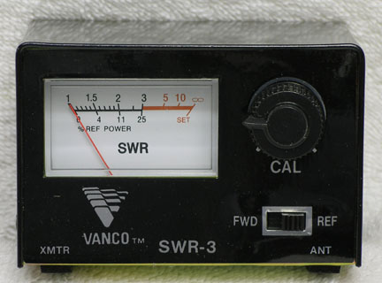

Reflexion and Standing Wave
© J.L. Noullet 2016
| Reflexion Coefficient | ? |
ZL/Z0 | ? |
Standing Wave Ratio SWR | ? |
Goal
Observing the signals or waves in a transmission line with characteristic impedance Z0
connected to a line with characteristic impedance ZL, in order to demonstrate
the partial reflexion or scattering at the impedance discontinuity point.
- the horizontal axis represents the physical position along the line
- the time is represented by... the time itself (it may be suspended by means of the pause button)
- the incident wave comes from the left end and propagates to the right, with constant amplitude and frequency
- the left end of the line is not seen, no reflexion is assumed there
- one may vary the reflexion coefficient from -1 to +1 (real values only),
which is equivalent to varying ZL form 0 to infinity (purely resistive impedance)
Different representations of the waves
In permanent sinewave mode, only the total wave and the transmitted wave are observable.
- the incident wave and the reflected wave cannot be distinguished, they are the components of the total wave :
total wave = incident wave +
reflected wave
- The standing (or stationary) wave and the travelling wave are the components of another decomposition of the total wave :
total wave = travelling wave +
standing wave
Vertical and horizontal grids
- the "quarter wave" lines represent the positions located at a distance from the discontinuity point which is
a multiple of 1/4 wavelength.
- note that the nodes and antinodes of the standing wave are at these positions
- the "max/min" horizontal lines represent the max and min values of the total wave amplitude, the ratio of which is
the Standing Wave Ratio or SWR
- note that the min and max points of the total wave appear at places located at a distance from the discontinuity
point which is a multiple of 1/4 wavelength.
Making of this interactive document
- The animated graphics are implemented on a HTML5 canvas element,
the curves are computed by a javascript program which is embedded in this web page
- The control menu is implemented by means of the
dat.gui.js javascript library
- All this is free open-source software !
